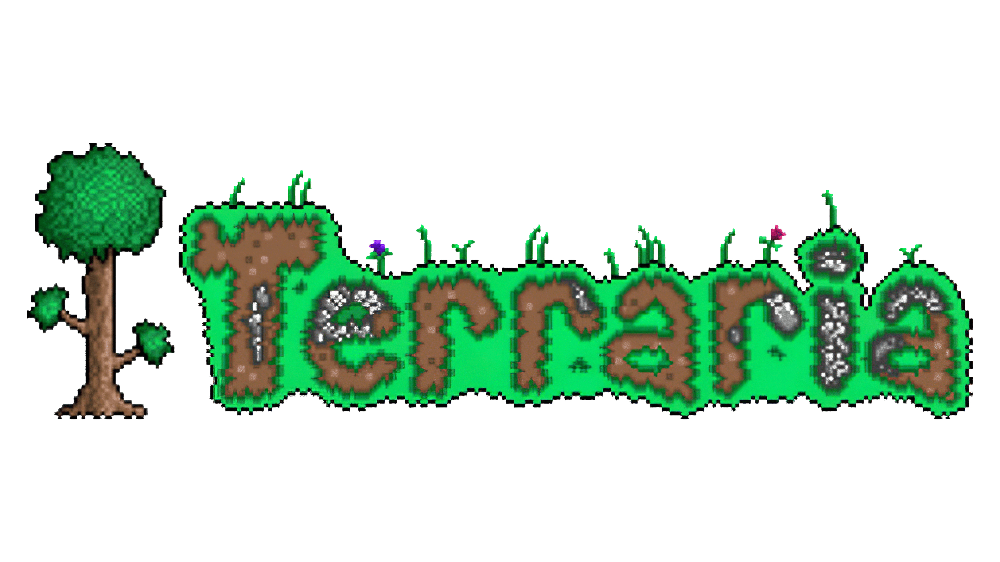
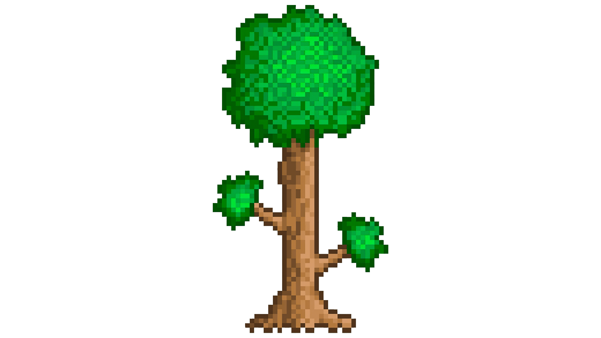

Terraria has always been one of my favorite games ever. Always been pretty addicting and relaxing to build stuff. Also it's better than Minecraft.
Hi. My name's Nathaniel. Everyone calls me Nate. I'm a bit of a loner. I don't really talk too much to people. My interests have honestly been all over the place
since I was young. First it was cars, then Star Wars and Legos, then Transformers, and then back to Star Wars and Legos, then to Nintendo and gaming, and now it just
feels like a little bit of everything. As of right now, I'm just trying to get through college. I'm mainly focusing on filmmaking, with stop motion animation as
my specialty. I've already done two stop motion films and I'm currently working on a third one called "Operation Knightfall" which will be animated using Legos,
just as the last ones were. I had also done one film that was filmed in real life called "Man In The Box," which I'd say was my best, funnily enough. Also my favorite
animal are rabbits. Cats are a close second.




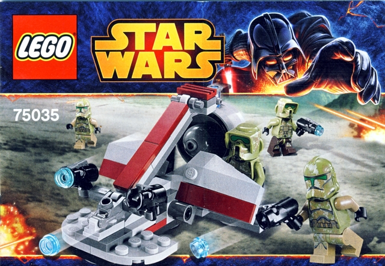


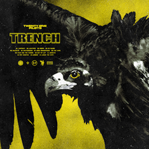


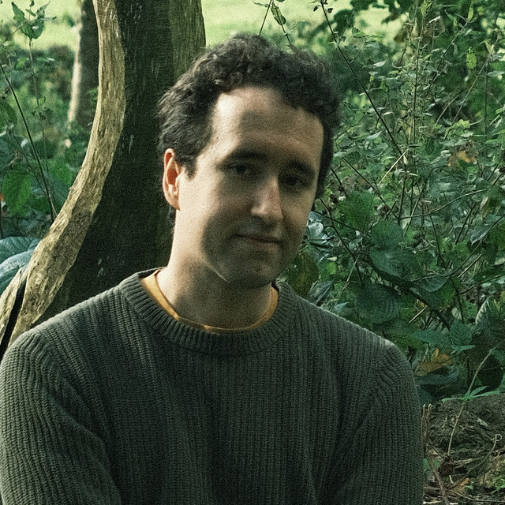

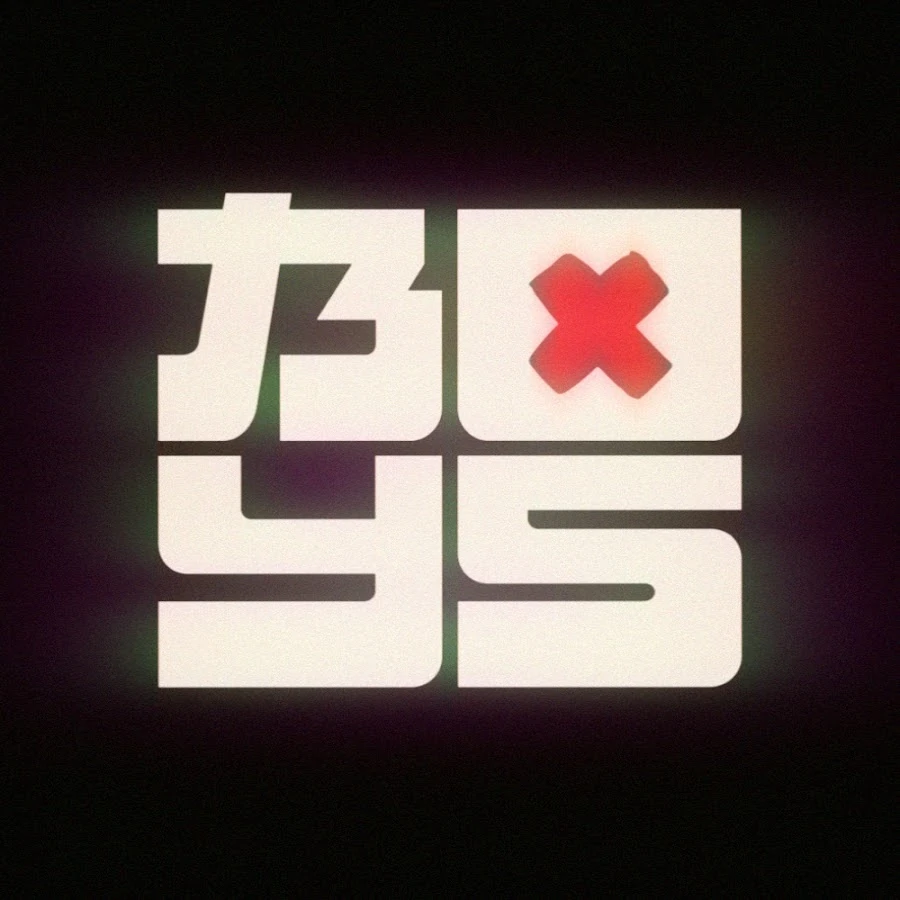
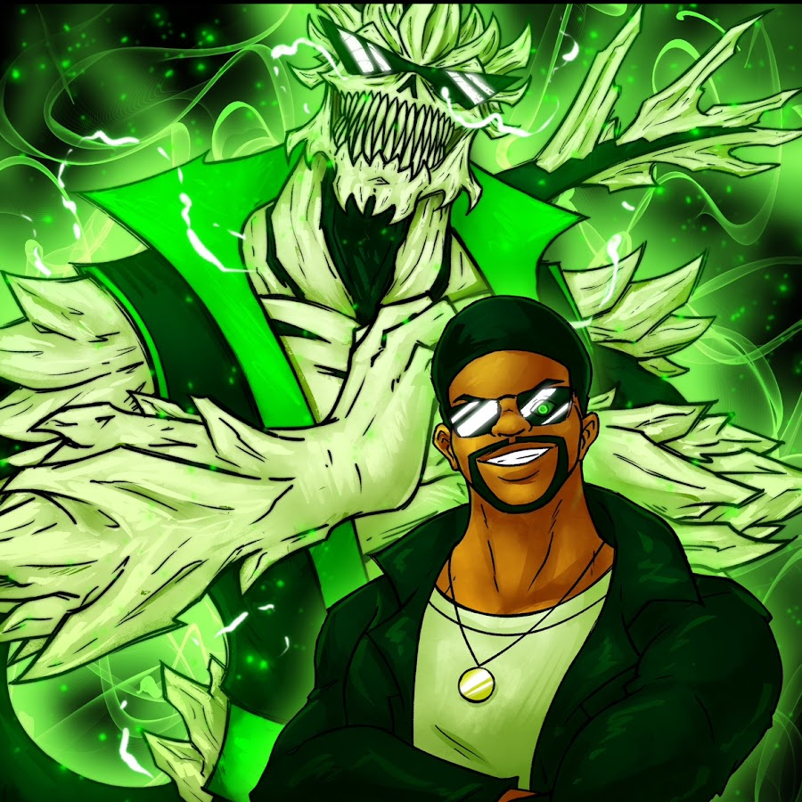
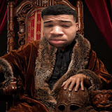

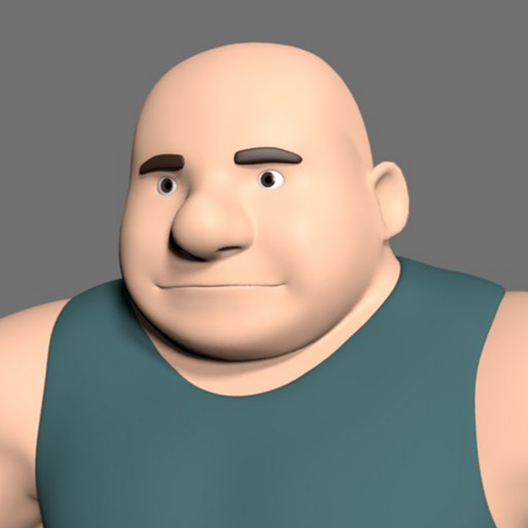
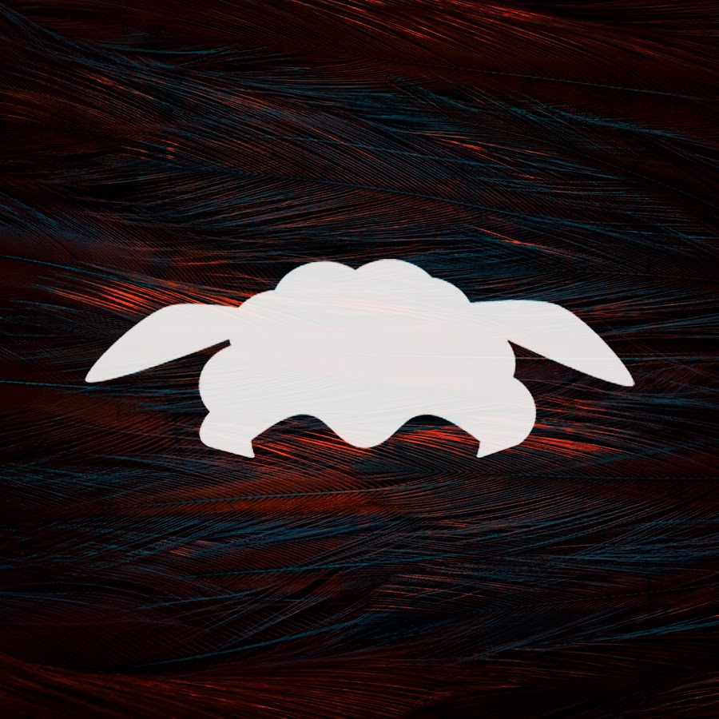
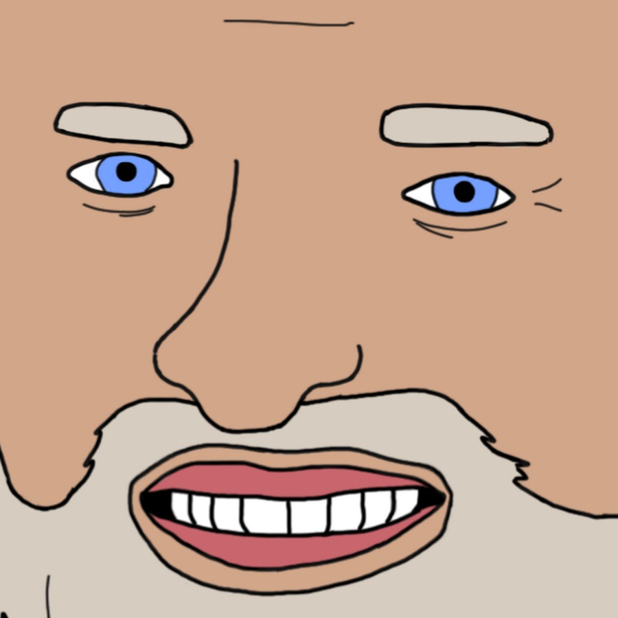